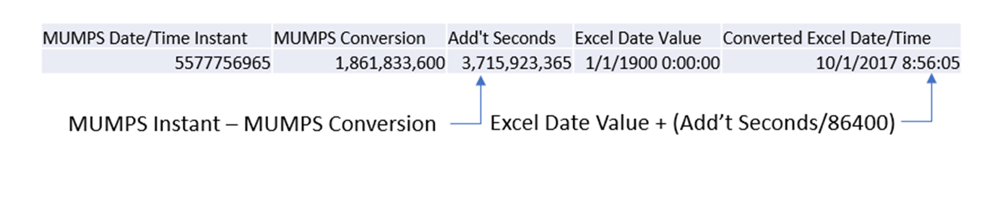

MUMPS to Excel Date and Time Conversion
This is a simple template for converting a date and time instant from a MUMPS to Microsoft Excel format
I am sharing the original excel template I created years ago
Getting started:
- Download the sample MS Excel file: MUMPS to Excel Date and Time Conversion.
- Simply use the provided columns to convert the MUMPS instant
- Pay particular attention to the column formatting to allow the calculation to work
